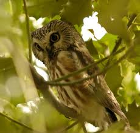

Cú Mèo một loại chim được nhiều người biết đến và ghét chúng, vì nhiều người cho rằng chúng mang lại nhiều điều xui xủi, chết chóc, tang thương. Hầu hết những loài cú mèo thường có khuông mặt nhìn đáng sợ, thường nhìn đồ vật một cách chằm chằm, và thường có mùi hôi tanh.
Chim Cú mèo thường có màu nâu, màu xam, ở phần bụng vào mặt có lông màu nhạt hơn. Chúng thường hoạt động vào ban đên, ăn các loại côn trùng và động vật không có xương sống khác. Chúng có mắt khá là tinh quái, bay lượng mạnh mẽ với đôi cánh dàu và hẹp. Chúng thường sống di cư theo các mùa để tìm kiếm nguồn thức ăn.
Cú mèo thường làm tổ trên các cành cây cao, trên các nóc nhà, thức ăn của chúng chủ yếu là chuột, côn trùng và các loại chim nhỏ khác. Việc cú mào làm tổ trên nóc nhà khiến nhiều người lo lắng và khiếp sợ.